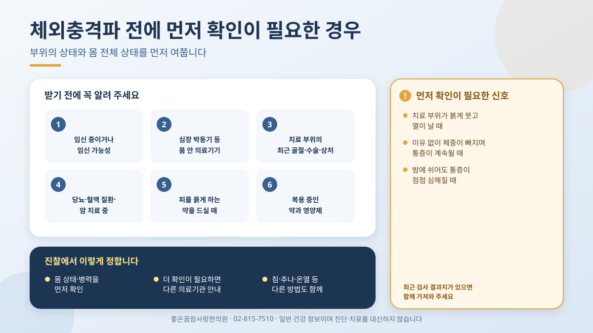

이종호 한의사 감수좋은꿈참사랑한의원 대표원장 (한의사 면허번호 19769)발행 2026-11-23 · 수정 2026-11-25
이 글의 차례
체외충격파 전에 먼저 확인이 필요한 경우는 임신 중이거나 임신 가능성이 있을 때, 심장 박동기처럼 몸 안에 의료기기가 있을 때, 치료하려는 부위에 감염이나 종양, 최근 골절이 있을 때, 피가 잘 멎지 않을 때입니다. 체외충격파는 몸 밖에서 아픈 부위에 충격파 에너지를 전달하는 방법이라 누구에게나 같은 방식으로 하지 않습니다.
그래서 시작 전에 몸 상태와 병력을 꼭 여쭙습니다.
이런 확인은 받으시는 분을 걱정시키려는 것이 아니라, 같은 장비라도 몸 상태에 따라 쓰는 자리와 세기를 달리하거나 아예 다른 방법을 고르기 위한 과정입니다. 몇 해 전 받은 수술, 다른 병원에서 맞은 주사, 건강검진 뒤 새로 먹기 시작한 약처럼 본인은 대수롭지 않게 여기는 이야기가 판단에 중요한 경우가 많습니다.
왜 이런 불편이 생길 수 있나요
- 충격파 에너지는 치료 부위뿐 아니라 그 주변 조직에도 전달될 수 있어, 그 부위의 상태를 먼저 알아야 합니다.
- 감염이나 종양, 최근 골절이 있는 부위는 자극을 피해야 하는 경우가 있습니다.
- 몸 안에 넣은 의료기기, 임신, 출혈 경향처럼 몸 전체 상태에 따라 방법을 달리 생각해야 하는 경우가 있습니다.
- 가슴 위쪽처럼 폐와 가까운 부위, 큰 혈관이나 신경이 지나는 자리는 피하거나 더 신중하게 정합니다.
- 당뇨 등으로 감각이 둔한 부위는 자극의 세기를 제대로 느끼기 어려울 수 있어 강도를 정할 때 참고합니다.
- 성장기 청소년은 뼈가 자라는 부위를 더 신중하게 살핍니다.
먼저 이렇게 여쭙니다
- 임신 중이거나 임신 가능성이 있나요?
- 심장 박동기나 몸 안에 넣은 의료기기가 있나요?
- 치료하려는 부위에 최근 골절, 수술, 상처가 있나요?
- 최근 그 부위에 주사 치료를 받았나요?
- 인공관절이나 금속 고정물이 치료 부위 가까이에 있나요?
- 당뇨, 혈액 질환, 암 치료 중인 것이 있나요?
- 피를 묽게 하는 약을 드시나요?
스스로 점검해 보세요
- 임신 중이거나 임신 가능성이 조금이라도 있다
- 심장 박동기 같은 의료기기가 몸 안에 있다
- 치료받을 부위에 최근 골절, 수술, 주사 치료를 받았다
- 치료 부위가 붓거나 뜨겁고, 만지면 혹 같은 것이 느껴진다
- 암 진단을 받았거나 치료 중이다
- 피를 묽게 하는 약을 먹거나 멍이 잘 드는 편이다
- 당뇨가 있어 손이나 발의 감각이 둔하게 느껴진다
하나라도 해당하거나 잘 모르겠다면 접수할 때부터 말씀해 주세요. 확인이 끝날 때까지 체외충격파는 미루고 다른 방법을 먼저 살핍니다.
일상에서 먼저 해 볼 수 있는 것
- 지금 앓고 있는 병과 치료 중인 것을 메모해 오기
- 수술 받은 부위와 시기를 적어 오기
- 복용 중인 약과 영양제를 모두 알려 주기
- 수술 기록이나 진단서, 금속 고정물 정보가 있으면 사진으로 챙겨 오기
- 걱정되는 점은 진료 전에 미리 말하기
무엇을 말씀드려야 할지 모르겠다면 최근 1년 사이 병원에서 들은 이야기를 떠올려 보시면 쉽습니다. 건강검진에서 다시 검사하라는 말을 들은 것, 새로 받은 약, 응급실에 간 일처럼 짧게라도 적어 오시면 빠뜨리는 것이 줄어듭니다. 임신 계획이 있거나 가능성이 있다면 진료실에서 편하게 말씀해 주세요.
예를 들면 이런 경우입니다
- 예를 들어 무릎 인공관절 수술을 받은 어르신이 반대쪽 무릎이나 발뒤꿈치 통증으로 오신 경우라면, 수술한 부위와 시기를 먼저 확인하고 그 자리를 피하거나 다른 방법을 함께 검토합니다.
- 예를 들어 운동부 활동을 하는 청소년이 발뒤꿈치나 무릎 아래가 아파 보호자와 함께 온 경우라면, 뼈가 자라는 시기일 수 있어 아프기 시작한 때와 운동량을 먼저 여쭙고, 필요하면 영상 검사가 가능한 의료기관을 먼저 안내합니다.
- 예를 들어 둘째를 준비하며 손목이 아파진 육아 중인 분이라면, 임신 가능성이 있는 동안에는 체외충격파 대신 다른 방법을 함께 찾습니다.
얼마나 지켜보고, 언제 바로 확인할까요
- 다른 병원에서 주사를 맞은 부위라면 주사 날짜를 알려 주세요. 언제부터 체외충격파를 검토할지는 진찰 뒤 따로 정합니다.
- 임신 가능성이 확인되지 않았다면 확인될 때까지 체외충격파는 미룹니다.
- 치료 부위의 붓기나 열감이 며칠이 지나도 가라앉지 않는다면 체외충격파보다 원인 확인이 먼저입니다.
- 이럴 땐 바로 확인하세요. 치료 부위가 붉게 부어오르며 열이 나거나, 만져지는 혹이 빠르게 커지거나, 한쪽 종아리가 갑자기 붓고 당기며 뜨거워지면 기다리지 말고 영상 검사가 가능한 의료기관이나 응급실에서 먼저 확인받으세요.
한의원에서 함께 살필 수 있는 경우
- 진찰에서 몸 상태와 병력을 먼저 확인한 뒤 체외충격파가 맞는지 판단합니다.
- 확인이 더 필요하다고 판단되면 다른 의료기관 검사를 먼저 안내합니다.
- 체외충격파 대신 침, 추나, 온열 등 다른 방법을 함께 검토하기도 합니다.
좋은꿈참사랑한의원에서는 먼저 병력과 드시는 약, 아픈 부위의 상태를 충분히 듣고, 필요하다고 판단될 때 초음파로 통증 부위를 확인합니다. 체외충격파가 맞지 않거나 확인이 더 필요한 경우에는 그 이유를 설명드리고 다른 방법이나 다른 의료기관 진료를 안내합니다. 귀가 전에는 집에서 지켜볼 점과 다음에 확인할 일을 알려 드립니다.
처음 오시면 접수 때 지금 치료 중인 병, 수술 이력, 몸 안의 의료기기, 드시는 약, 임신 가능성을 함께 적습니다. 진료실에서는 아픈 부위와 경위를 듣고 맥부터 짚어 본 뒤 아픈 곳을 눌러 보고 움직여 봅니다.
체외충격파를 쓸 수 있다고 판단되면 원내 장비(제우스·한일티엠) 가운데 어떤 것으로 어느 부위에 어느 세기로 시작할지, 몇 번과 어떤 간격으로 이어 갈지는 진찰 뒤 함께 정합니다. 쓰기 어려운 경우에는 그 이유와 대신할 수 있는 방법을 설명해 드리며, 비용이나 보험 적용은 방문 전 전화로 확인해 주세요.
이렇게 기록해 오시면 상담이 쉬워집니다
- 지금 치료 중인 질환과 다니는 병원
- 수술 받은 부위와 시기, 몸 안에 넣은 의료기기
- 최근 주사 치료를 받은 날짜와 부위
- 복용 중인 약과 영양제 목록
- 최근 받은 검사 결과지
이런 증상은 먼저 확인이 필요합니다
- 치료 부위가 붉게 붓고 열이 나는 경우
- 이유 없이 체중이 빠지면서 통증이 계속되는 경우
- 밤에 쉬어도 통증이 점점 심해지는 경우
이런 경우에는 체외충격파보다 원인 확인이 먼저입니다. 체외충격파는 진찰 후 필요하다고 판단될 때만 하며, 대상과 횟수, 비용은 진찰 후 안내해 드립니다. 복용 중인 약은 처방한 의사와 상의 없이 줄이거나 끊지 않습니다.
함께 읽으면 좋은 글
- 혈액을 묽게 하는 약을 먹고 있으면 체외충격파 전에 무엇을 알려야 하나요?
- 체외충격파를 처음 받기 전에 알아 두면 좋은 것은요?
- 아이나 청소년이 초음파 검사를 받을 때 보호자는 무엇을 알아 두면 좋을까요?

여쭙는 것
- 임신 중이거나 임신 가능성이 있나요?
- 심장 박동기나 몸 안에 넣은 의료기기가 있나요?
- 치료하려는 부위에 최근 골절, 수술, 상처가 있나요?
생활에서 해 볼 것
- 지금 앓고 있는 병과 치료 중인 것을 메모해 오기
- 수술 받은 부위와 시기를 적어 오기
- 복용 중인 약과 영양제를 모두 알려 주기
한의원에서 함께 살필 것
- 진찰에서 몸 상태와 병력을 먼저 확인한 뒤 체외충격파가 맞는지 판단합니다.
- 확인이 더 필요하다고 판단되면 다른 의료기관 검사를 먼저 안내합니다.
- 체외충격파 대신 침, 추나, 온열 등 다른 방법을 함께 검토하기도 합니다.
먼저 확인이 필요한 신호
- 치료 부위가 붉게 붓고 열이 나는 경우
- 이유 없이 체중이 빠지면서 통증이 계속되는 경우
- 밤에 쉬어도 통증이 점점 심해지는 경우
한눈에 보는 표
| 구분 | 핵심 |
|---|---|
| 여쭙는 것 | 임신 중이거나 임신 가능성이 있나요? 심장 박동기나 몸 안에 넣은 의료기기가 있나요? |
| 생활에서 해 볼 것 | 지금 앓고 있는 병과 치료 중인 것을 메모해 오기 수술 받은 부위와 시기를 적어 오기 |
| 한의원에서 함께 살필 것 | 진찰에서 몸 상태와 병력을 먼저 확인한 뒤 체외충격파가 맞는지 판단합니다. 확인이 더 필요하다고 판단되면 다른 의료기관 검사를 먼저 안내합니다. |
| 먼저 확인이 필요한 신호 | 치료 부위가 붉게 붓고 열이 나는 경우 이유 없이 체중이 빠지면서 통증이 계속되는 경우 |
자주 묻는 질문
확인할 것이 많아 보이는데 위험한 치료인가요?
몸 상태에 맞게 하기 위해 미리 확인하는 것입니다. 그래서 진찰 후 필요하다고 판단될 때만 합니다.
병원 검사 결과를 가져가야 하나요?
있으시면 가져오시면 좋습니다. 없어도 진찰하며 필요한 것을 안내합니다.
인공관절 수술을 받았는데 상담할 수 있나요?
상담은 가능합니다. 수술 부위와 시기를 알려 주시면 그 부위를 피하거나 다른 방법을 함께 검토합니다.
임신 가능성만 있어도 미뤄야 하나요?
확인될 때까지는 체외충격파를 미루고, 그동안 맞는 다른 방법을 함께 찾습니다.
진료 시간은 어떻게 되나요?
좋은꿈참사랑한의원은 평일 09:30~20:00(점심 13:00~14:00), 토·일·공휴일 09:30~15:00에 진료합니다.
좋은꿈참사랑한의원은 재진 때 지난번 이야기부터 이어서 여쭙니다. 진료시간과 예약은 오시는 길에서 확인하세요.
어디서 상담받을 수 있나요?
좋은꿈참사랑한의원은 서울 동작구 만양로2길 2 신성빌딩 3층·5층(서울 동작구 상도동, 7호선 상도역 3번 출구 근처)에 있습니다. 한의사 3명(이종호 대표원장, 조영기 수석진료원장, 정원영 진료원장)이 진료합니다. 진료시간은 평일 09:30~20:00(점심 13:00~14:00), 토·일·공휴일 09:30~15:00이며, 방문 전 전화로 확인을 권합니다. 예약은 네이버 예약, 카카오톡 상담, 전화 02-815-7510로 받습니다.
이 글은 일반적인 건강 정보이며 개인의 진단이나 치료를 대신하지 않습니다. 증상이 있거나 복용 중인 약이 있다면 진료를 통해 확인하세요. 치료 효과는 개인마다 다를 수 있습니다.
작성 기준: 일반적으로 알려져 있는 건강 정보를 참고해 정리했습니다(대표원장 감수). 증상 기록은 1~2주 동안 하루 1회, 비슷한 시간에 적어 오시면 지난 상태와 비교하기 쉽습니다.